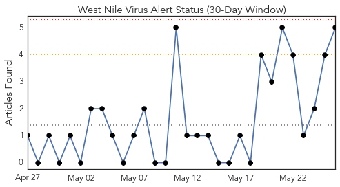
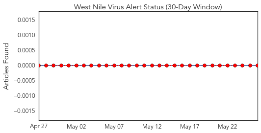
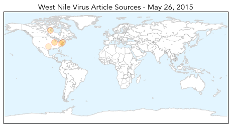
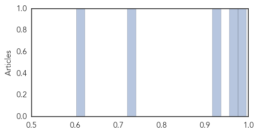

Toggle navigation
Early Warning
Daily Alerts
West Nile Virus
May 26, 2015
Compare to:
-
Dengue Fever
Hemmorhagic Fever
Mold/Fungal Infection
Influenza
Meningitis
Pertussis / Whooping Cough
Middle East Respiratory Syndrome
Cholera
Hepatitis
Chikungunya
Yellow Fever
Bubonic Plague
Swine Flu
Ebola
Measles
Unknown
Mumps
30 Day Trends
Web: 0
alerts
, 0
warnings
Twitter: 0
alerts
, 0
warnings
Top Articles:
0.996
West Nile Virus Season Has Researchers on the Alert
0.959
Blue Marsh Lake West Nile Virus Prevention
0.921
Durham health department begins West Nile virus surveillance activities
0.728
Ensure Horses are Vaccinated Against EEE, WNV, and Rabies
0.604
Tetanus shots available for people exposed to floodwater
Top Tweets:
No tweets found for May 26, 2015
Web/News Articles

Tweets

Article Locations

Article Confidences
